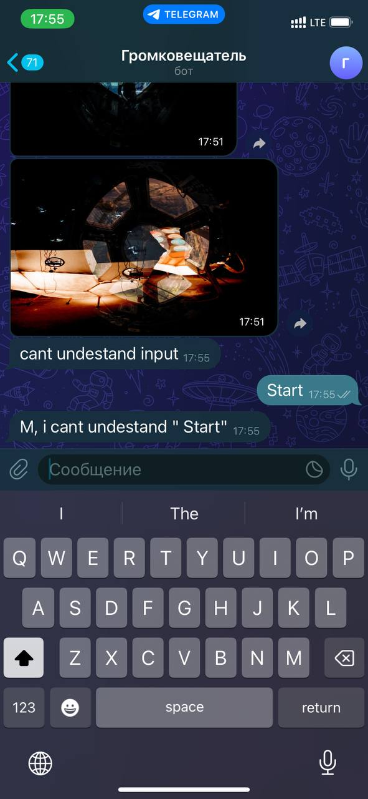
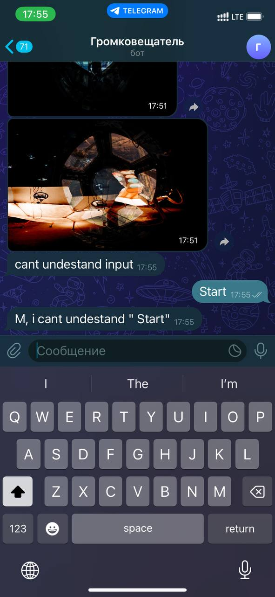

Пример простого Telegram-бота
Цель разработки проекта - получение навыков работы с асинхронном программированием в Node.js с применением промисов.
Задачей приложения является генерация случайных изображений и отправка их в чат Telegram.
Данный код представляет собой пример простого Telegram-бота, написанного с использованием библиотеки node-telegram-bot-api и языка JavaScript.
Для реализацией задачи этого приложения выбран способ получения двух случайных изображений с помощью API Unsplash и написана функция blendImages, которая реализует алгоритм смешивания двух изображений с использованием пирамиды изображений и маски.
Для обработки асинхронных операций, таких как HTTP-запросы и работа с файлами, используются промисы. Благодаря этому, код становится более удобочитаемым и позволяет управлять последовательностью выполнения операций.
 
